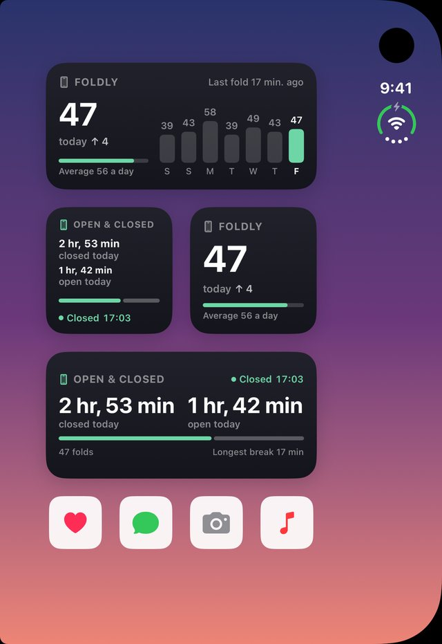
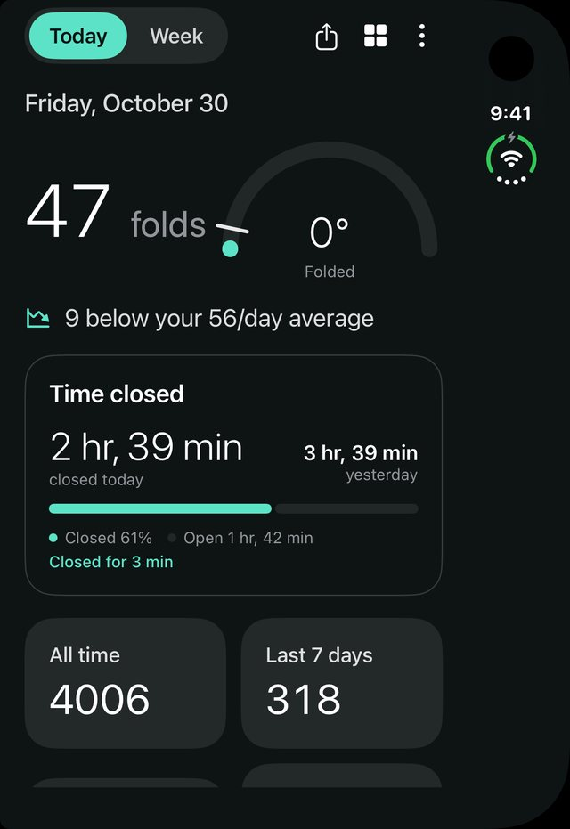

Chaque pli, compté. Pensé pour l’iPhone Duo.
À chaque ouverture de votre Duo, Foldly compte. Voyez combien de fois vous le dépliez, combien de temps il reste fermé et comment se passe votre semaine.
Présenté sur iPhone Duo. Foldly fonctionne sur tout iPhone avec iOS 17 ou plus récent.
Compteur
Ouvrez. Ça compte. Sans appuyer sur rien.
Foldly lit la charnière quand l’app est à l’écran. Sinon, une automatisation Raccourcis compte à sa place, pour ne rater aucune ouverture.
Chaque ouverture ajoute un, en direct, avec un petit clic.
« Quand l’iPhone est fermé » lance « Compter un pli ». Prêt en quelques touches.
Aujourd’hui, à côté de votre moyenne et d’hier.
Désactivée par défaut. Alertes à 80 % et 100 %.Plus
Temps
Ouvert ou fermé. À la minute près.
Foldly tient les deux comptes : combien de temps votre Duo est ouvert, et combien de temps il reste fermé. Votre plus longue pause de la journée aussi.

Semaine
Votre semaine. Chaque dimanche.
Un court bilan le dimanche soir : votre total, l’écart avec la semaine d’avant, vos jours les plus calmes et les plus chargés, le temps ouvert et fermé.

iPhone Duo
Prêt pour l’iPhone Duo. Dans toutes les positions.
Fermé, Foldly s’affiche sur l’écran extérieur comme sur n’importe quel iPhone. Ouvert, il prend le grand écran. À moitié ouvert, il se lit comme un livre, ou tient debout sur votre bureau comme un petit tableau de bord. Regardez le film plus haut, ou
Le compte du jour, votre moyenne et le temps fermé, juste à côté de l’appareil photo.
Votre compte sur l’écran verrouillé et l’écran extérieur, mis à jour à chaque pli.
Pliez-le en L, ajoutez un widget Foldly, et vos chiffres restent grands et lisibles.
Pas de charnière ? Touchez le chiffre pour compter. Tout le reste fonctionne pareil.
Widgets
Votre compte. Partout.
Écran d’accueil, écran verrouillé et mode En veille. Ouvert et fermé montre les deux temps côte à côte ; le grand widget ajoute votre semaine.

Styles
À votre goût. Trois styles.
Choisissez-en un à la première ouverture, changez quand vous voulez dans les Réglages.



Détails
Et tout le reste. Les petites choses.
30 jours, 12 mois et un calendrier de vos journées, avec vos records.
Votre historique en tableur (CSV).
Cinq couleurs pour vos widgets.
Une notification facultative en fin de journée.
Vos chiffres du jour sur une jolie carte.
La charnière du logo se déplie, puis votre compte défile.
« Compter un pli » marche dans n’importe quelle automatisation.
Sentez chaque pli, ou restez en silence.
Confidentialité
Pas de compte. Pas de pub. Rien ne quitte votre iPhone.
Foldly ne collecte aucune donnée. Vos plis restent sur votre iPhone, partagés uniquement avec les widgets de Foldly. Politique de confidentialité
Questions.
De quoi ai-je besoin ?
Un iPhone avec iOS 17 ou plus récent. Sur iPhone Duo, Foldly compte chaque pli tout seul. Sur les autres iPhone, vous touchez le chiffre pour compter.
Ça compte quand l’app est fermée ?
Oui, avec une automatisation Raccourcis : « Quand l’iPhone est fermé », puis « Compter un pli ». Foldly vous guide.
Foldly va-t-il limiter mon usage du téléphone ?
Non. Il compte, c’est tout. La limite quotidienne est facultative et désactivée par défaut ; sans elle, Foldly compare aujourd’hui à votre propre moyenne.
Où vont mes chiffres ?
Nulle part. Ils restent sur votre iPhone, partagés uniquement avec les widgets de Foldly. Il n’y a ni compte ni serveur.
Combien ça coûte ?
Un seul achat, une fois : l’historique complet, tous les widgets, leurs couleurs, les alertes de limite et l’export. Sans abonnement, sans pub.
Quelles langues ?
Français et anglais. Foldly suit la langue de votre iPhone.
Quand puis-je l’essayer ?
Maintenant. Téléchargez Foldly sur l’App Store depuis votre iPhone.
Foldly est sur l’App Store.
Téléchargez-le sur votre iPhone, et Foldly est à vous.